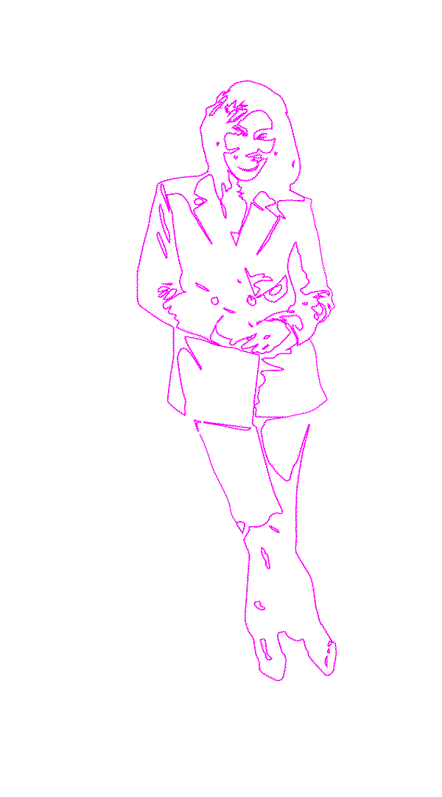
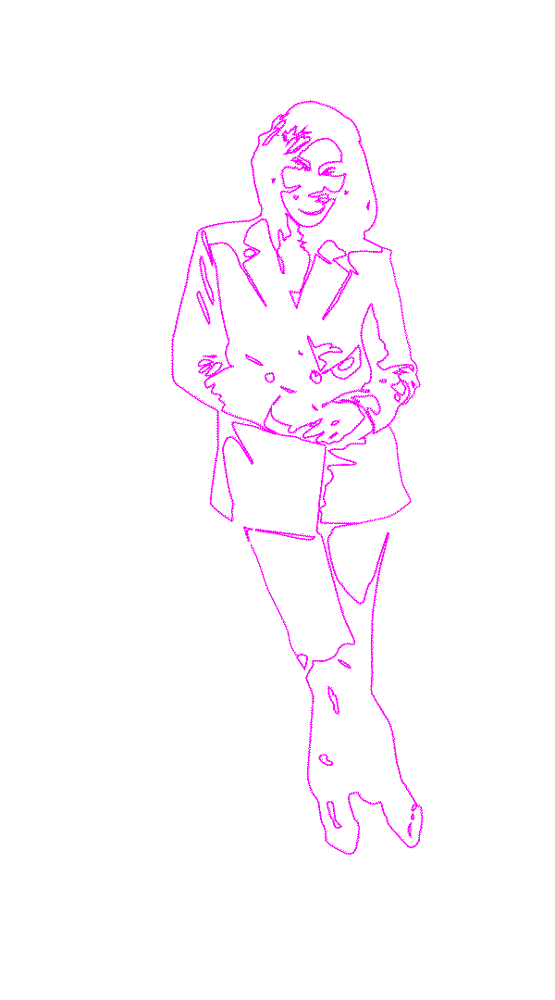

Tamara Abney
An blankblank
blankblankblank
EtiQUETTE Coach
blankblankblanklankb
business owner, pageant & mother.
blankblankblank
EtiQUETTE Coach
blankblankblanklankb
business owner, pageant & mother.
Who are you and what do you do?
My name is Tamara Abney. I am an etiquette and protocol trainer. I am a Chief of Staff at a nonprofit. I am a nonprofit executive founder of my own business that provides menstrual hygiene products to those in need. I am also a pageant coach. So, I have a lot of different occupations, but what we’re here to talk about today is professional development training.
Who is your audience? How would you describe them?
The majority of my audience are college students, and I work with a lot of untraditional college students—the first people in their family to go to college or older students. The other half of the time, my audience is going to be working professionals. They’re usually entry—level or middle management, looking to further their career. I’m hired by corporations to come in and do overall basic etiquette [training]. We go all the way from how to properly introduce yourself, how to enter a room, how to network within that room, all the way to dress attire, to dining.
Where did this journey begin?
I have been in the hospitality industry for 20 plus years. I started at the front desk of a major hotel here in Pittsburgh and basically have worked my way up throughout the years with my final hospitality position being Director of Multicultural sales for the city of Cincinnati’s Convention and Visitors Bureau. So during that time period, in the span of 20 years, I’ve learned a lot about hospitality and customer service.
But my passion for professional development and mentorship started early in my career when I was working at the hotel. I was able to be promoted from the front desk, to a front office supervisor, to a sales role. I looked around at the people who looked like me and wondered,
"Why are therellllllllllllllllllll ll so many people of color lllllllll working in the back ll of the hotel?" lllllllllllll
I’m talking about the banquet servers, housekeeping, the people that actually make the hotel run. But, they weren’t always tapped for a lot of the opportunities to go into a traditional office job. So I wondered why that was. Management tends to cherry pick who they want to go into management training programs, who they were going to promote, and a lot of that did not happen for people that look like me. It happened for me, but I possessed certain skills that some people did not. I felt strongly about creating programming that would provide the social cues that could be useful to people of color.
That was what started the thought process of formalizing training. From there, I went to get my master’s degree in organizational leadership with an emphasis on employee relations. That was my first step in trying to build that programming within my corporation. But, my life switched, and I ended up taking jobs. I left hospitality for a little bit and went to an advertising agency. While I didn’t create a formalized program for the hospitality industry, I was able to make sure that throughout all of my leadership positions, I always went back and mentored the people that were either working for me or the people that were working around me.
What inspired you and how have you been propelled ever since?
I had a wonderful assistant Ronnie, who I made sure the first thing that I did when I met with her was not only to express my expectations of her, but I wanted to know her expectations of me and of her position—what she specifically want to achieve in her life and her career—so I could think about ways that I could support her. Even as simple as becoming a sales manager, I made sure that tasks were assigned and prepped her for that particular role. When she did have the opportunity to become a sales manager, one of the first things we did was go to lunch and talk about, “This is how you conduct yourself, this is what you should expect, and this is how you work with clients.”
I ultimately wanted her to be the star that I knew she was. I felt like it was my job to make sure that she was well prepared for that role, that there weren’t any surprises that she would be just set up for success in general.
Being young in her 20’s, she may not know what the Vice President of the Convention Visitors Bureau wanted or expected from her, or how she would need to present herself when she entertains clients, or what she should think about, like pitfalls. I wanted to make sure she was prepared. And she is, she’s wonderful. She’s thriving and doing a great job. That is what got me into it and what inspired me.
Has there been any individuals who have supported you along the way?
I would say that the most impactful person would be my husband. We sat down one day, and he was like, “You don’t have to work here, you don’t have to do this, you’re smart enough to do it yourself.”
He didn’t call me a genius, but it’s like telling your little kid, “You’re a genius, you can do this!” He gave me an extra confidence boost to say that, I do have good skills, I have something to offer that people would want, and to actually take it seriously. That’s when I hired a branding expert, and they were able to sit down with me and understand what my likes and dislikes were. They helped to put together my website. I went and got professional pictures taken. I had someone do all the copywriting and the logo, which I think is all important and goes into what you’re even talking about like your self expression. Think about the colors that call out to you! How do you want to present yourself to the world? When I’m not necessarily in front of people, I might look like this because I’m a mother of a two and a four year old. But, my website brings people in; your first entry into the world of Tamara Abney is when you go to my website, or you find me some kind of way—Google search. But, the website has been so instrumental in building my business, because corporations aren’t going to hire someone that they don’t think would be a good representative or someone that they don’t want their clients and or students to emulate.
It’s really important in general, for people to think about whether it’s their website, their social media, or anything, that they’re presenting to the world… Is this how you want someone to view you?
When they see it, do they say, “You know, I think I want to interview her. You know what, I think I want to hire her. I’m willing to pay her money to talk to me?” I feel like all of these pieces are so important not only for branding yourself, but also
showing up
lllllllllllllllthe way you want the world llllllllllllllllllllllllllllto see you.
How have you seen your words or lessons impact others? Are there stories that you could share?
I don’t know if I have specific stories, but I did a series of trainings for a university. They were first generation students. I don’t know if it impacted them, but I always thought it was cool because it’s volunteer—the university pays me and they come for free. But, people continuously came back, and they would be so excited to tell me that, “Oh, I interviewed!” They would keep me abreast of their progress, which I thought was a testament to working with me.
First of all, they felt comfortable enough that they could trust me with that information. I also liked it when the students emailed me afterwards and asked additional questions, because it meant they were paying attention.
I did something for two years with the same university, but for two different departments. I had a student that was in my other training, come to the other training. She was just so happy to see me and was giving me hugs. She knew all the answers because she’s already been through it. She just sat there and did her best and was like, “Yep, I know it!” I knew I could call on her if no one was being responsive. I just think that in those situations, I know that I’m making an impact on everyone. Specifically, I love it when I’m working with students, because I know that’s going to impact them down the road, when they do get a job.
They’re going to know how to act, they’re going to know how to interview, and they’re going to know how to show up. It just makes me super—duper proud.
Has there been any turning points in your career?
I don’t have any facts or statistics to throw out there, but I do have observations. I’d say that in the early 2000’s, it was a different time, but not much has changed.
People would lllllllllllllllllllll hire and promote lllllllllllllllpeople that looked like themselves.
In the hospitality industry, there were very few people of color in management positions. In the city of Pittsburgh, I don’t think there was a general manager who was a person of color. If I had to name one right now, there’s probably only one in the city of Pittsburgh. People of color were not in management positions; there were very few sales directors, revenue, or any of that—very few. I saw that there was an opportunity. I thought about why that was. People of color are just as smart; they have the skills and all that type of stuff. They probably know the hotel better than everybody else because they’re actually doing some of the hardest work in the hotel. I thought about my personal background. Even though I had a four—year degree, I was still working at the front desk.
My Grandmother is from the South, very southern Baelish, so I grew up with it because that’s how my Grandma was. I already knew how to dress. Certain things about me may have been different from some of the people that I saw working alongside me. I put those two things together to say, “Oh, that’s why I’m getting certain opportunities that they may not be getting.” But are they not getting it because they just don’t know or have that lived experience? Have they not been exposed to certain things that I may have been exposed to?
I was given a chance, and a lot of times it’s about first impressions. If you don’t dress a certain way, if you don’t look a certain way, people tend to write you off even if you could be very capable.
A turning point for me was at a work holiday party. It was Christmas, so I had a festive party dress on and was having White Zinfandel. Apparently, White Zinfandel is not that classy. But at 22, I thought it was classy; it was wine.
I didn’t even know there were different types of wine at that age; I just came out of college. So I’m drinking the wine, and the general manager comes over to me. He was like, White Zinfandel is cheap. Don’t drink that. You drink Red Zinfandel. I was like, okay, But I was able to make a first impression; I was able to make a connection. From there, my career became much easier to navigate at the hotel because someone actually paid attention to me. It was because of the way I presented myself; if I wore jeans and a T—shirt to that Christmas party, which some people did, then that general manager would have walked right by me and not paid me any attention. But, because I was dressed appropriately for the occasion, which is very different from the other 21 or 22—year—olds, he paid attention. I was promoted months later. It’s interesting how people have a certain comfort level with certain people based on the way they present themselves. And it’s just a fact. I teach people how to navigate that world.
It’s all about what you’re exposed to right?
What are some misconceptions about your work?
One misconception could be that etiquette does not allow people to be or show up as their authentic selves. If you’re doing something like dress attire, which I just talked about, you feel like, “Why do I have to wear pants? Or why do I have to wear a dress? Or why do I have to do this? Or you’re telling me I have to wear a black suit?” I don’t think etiquette or dressing for success are about any of that. To me, etiquette is just a set of general rules for being respectful to other people. It’s a way for you to navigate. It’s like a map. It doesn’t mean that things won’t change or that you can’t be flexible or adapt to different situations. It’s not rigid. A misconception is that etiquette and protocol are super rigid, and there’s no room for flexibility and self—expression, which there totally is.
What advice would you give to someone who is looking to discover their authentic voice?
I would say there are a couple different things. I love taking assessments. If you’re wondering, what is my authentic voice? How do I really feel? What do I want to do? How do I show my best?
There are assessments, or personality tests. Whether you do 16 personalities, DISC, or Myers Briggs, I think it’s interesting to see what your personality type is. That’s going to give you insight into how you express yourself to other people.
I would also say that one of the tools I love to use is color analysis. I always like to tell my clients—really anyone—that they should get one done because a color analysis allows you to see what colors you look best in. You will be very surprised. You’re like, “What, I don’t look great in black? Maybe I shouldn’t wear black!” Color can even change your mood or just brighten up your face. People will start to tell you, “Oh my goodness, you look great in blue! You look great in green.” That could build your self—confidence. If you’re someone who wears makeup, learning what looks best on your skin color and tone is wonderful. Those are all tools to help you, and taking the time to do self—reflection is just super important.
Everyone has the power within themselves. to create the life and the change that they want to see in the world and within themselves.
Everyone has the power within themselves. to create the life and the change that they want to see in the world and within themselves.


 
